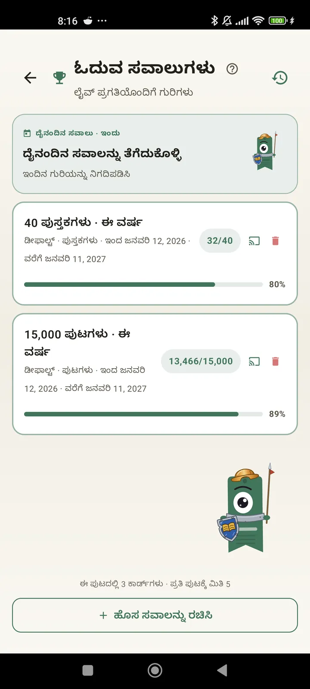

ಓದುಗರಾಗಿ ನಿಮ್ಮನ್ನು ನೀವು ಅರಿಯಿರಿ
ನಿಮ್ಮ ಓದಿನಿಂದ ಹೆಚ್ಚಿನದನ್ನು ಪಡೆಯಲು ಸವಾಲುಗಳು, Bingo, ವಿಜೆಟ್ಗಳು ಮತ್ತು ಇನ್ನಷ್ಟು ವೈಶಿಷ್ಟ್ಯಗಳು. 3.7 ರಲ್ಲಿ ಹೊಸದು: ಸವಾಲುಗಳು ಮತ್ತು Bingo ವಿಜೆಟ್ಗಳು.

ಓದುವ ಸವಾಲುಗಳು
ಪುಟಗಳು, ಸ್ಟ್ರೀಕ್ಗಳು ಅಥವಾ ಪ್ರಕಾರಗಳ ಮೂಲಕ ಗುರಿಗಳನ್ನು ಇಡಿ. 15 ಸಕ್ರಿಯ ಸವಾಲುಗಳವರೆಗೆ ಉಚಿತ, Pro ಜೊತೆಗೆ ಅನಿಯಮಿತ. ಜೊತೆಗೆ ಮಿತಿಗೆ ಲೆಕ್ಕವಾಗದ, ನಿಮ್ಮಿಷ್ಟದಂತೆ ಹೊಂದಿಸಬಹುದಾದ ದೈನಂದಿನ ಸವಾಲು.

ದೈನಂದಿನ ಸವಾಲು
ಪ್ರತಿದಿನ ಹೊಸ ಗುರಿ. ನಿಮ್ಮ ಸ್ಟ್ರೀಕ್ ಮುಂದುವರಿಯಲು ಮಧ್ಯರಾತ್ರಿಯೊಳಗೆ ಸವಾಲನ್ನು ಪೂರ್ಣಗೊಳಿಸಿ.

ಓದುವ Bingo
ಪ್ರತಿ ತಿಂಗಳು ವಿಷಯಾಧಾರಿತ ಚೌಕಗಳಿರುವ ಎರಡು ಹೊಸ Bingo. ಸಾಲುಗಳು, ಕಾಲಮ್ಗಳು ಅಥವಾ ಸಂಪೂರ್ಣ ಕಾರ್ಡ್ ಪೂರ್ಣಗೊಳಿಸಿ.

ವಾರದ ಸಾರಾಂಶ
ಪ್ರತಿ ಸೋಮವಾರ, ನಿಮ್ಮ ವಾರದ ಒಂದು ನೋಟ: ಓದಿದ ಪುಟಗಳು, ಒಟ್ಟು ಸಮಯ, ಸ್ಟ್ರೀಕ್ ಮತ್ತು ಹಿಂದಿನ ವಾರಕ್ಕೆ ಹೋಲಿಸಿದರೆ ಹೇಗಿತ್ತು.

ಮಾಸಿಕ ಸಾರಾಂಶ
ತಿಂಗಳು ಮುಗಿದಾಗ, Lecturameter ಅದನ್ನು ಸಂಕ್ಷೇಪಿಸುತ್ತದೆ: ಪುಟಗಳು, ಸಮಯ, ಮುಗಿಸಿದ ಪುಸ್ತಕಗಳು, ದಿನದಿಂದ ದಿನಕ್ಕೆ ನಿಮ್ಮ ಗತಿ ಮತ್ತು ತಿಂಗಳ ನಿಮ್ಮ ಪುಸ್ತಕ.

Bingo ವಿಜೆಟ್ Pro
ಈ ತಿಂಗಳ Bingo ಕಾರ್ಡ್, ಯಾವಾಗಲೂ ಕಣ್ಣೆದುರು, ನೀವು ಪೂರ್ಣಗೊಳಿಸಿದ ಚೌಕಗಳು ಮತ್ತು ಮಾಡಿದ ಸಾಲುಗಳೊಂದಿಗೆ.

ಪುಸ್ತಕ ವಿಜೆಟ್ ಉಚಿತ
ನೀವು ಓದುತ್ತಿರುವ ಪುಸ್ತಕವನ್ನು ಹೋಮ್ ಸ್ಕ್ರೀನ್ನಲ್ಲೇ ನೋಡಿ: ಮುಖಪುಟ, ಶೀರ್ಷಿಕೆ, ಲೇಖಕ, ಪುಟಗಳು ಮತ್ತು ಪ್ರಗತಿಯ ಶೇಕಡಾವಾರು, ಯಾವಾಗಲೂ ಅಪ್ಡೇಟ್ ಆಗಿ. ನಿಮಗೆ ಬೇಕಾದಲ್ಲಿ ಹೊಂದುವಂತೆ ಗಾತ್ರ ಬದಲಿಸಬಹುದು.
ನಿಜವಾಗಲೂ ಗೆಳೆಯಾ, ಈ ಆ್ಯಪ್ ಥೆರಪಿಯಂತಿದೆ. ದಿನಕ್ಕೆ ಒಂದೆರಡು ಪುಟ ಓದುತ್ತಿದ್ದ ನಾನು ಈಗ ದಿನಕ್ಕೆ ಸುಮಾರು 20 ಪುಟ ಓದುತ್ತಿದ್ದೇನೆ, ಇನ್ನೂ ಸುಧಾರಿಸುತ್ತಿದ್ದೇನೆಬಳಕೆದಾರರ ಅಭಿಪ್ರಾಯ, ಇಮೇಲ್ ಮೂಲಕ ಬಂದದ್ದು

ಮಾಸಿಕ ಹೋಲಿಕೆ Pro
ಆ್ಯಪ್ ತೆರೆಯದೆಯೇ ನಿಮ್ಮ ಇತ್ತೀಚಿನ ತಿಂಗಳುಗಳ ಒಂದು ತ್ವರಿತ ನೋಟ. ಪ್ರತಿ ತಿಂಗಳ ಪುಟಗಳ ಬಾರ್ಗಳು, ಈಗಿನ ತಿಂಗಳು ಹೈಲೈಟ್ ಆಗಿ, ಹಾಗಾಗಿ ಕಳೆದ ತಿಂಗಳಿಗಿಂತ ಈ ತಿಂಗಳು ಚೆನ್ನಾಗಿ ಮಾಡುತ್ತಿದ್ದೀರಾ ಇಲ್ಲವಾ ಎಂದು ಒಂದೇ ನೋಟದಲ್ಲಿ ತಿಳಿಯಬಹುದು.

ಸವಾಲುಗಳ ವಿಜೆಟ್ Pro
ನಿಮ್ಮ ಸಕ್ರಿಯ ಸವಾಲುಗಳು ಮತ್ತು ಅವುಗಳ ಪ್ರಗತಿ ಹೋಮ್ ಸ್ಕ್ರೀನ್ನಲ್ಲಿ. ಯಾವುದನ್ನು ತೋರಿಸಬೇಕು ಎಂದು ಸವಾಲುಗಳು ಸ್ಕ್ರೀನ್ನಿಂದ ಆಯ್ಕೆಮಾಡಿ.